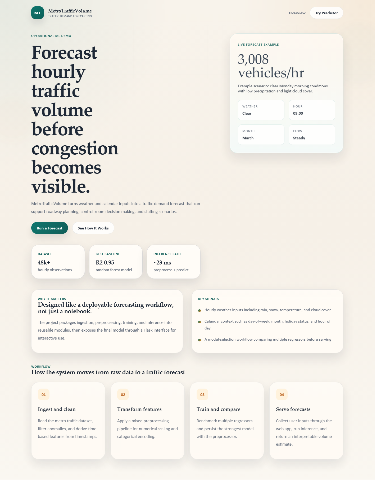
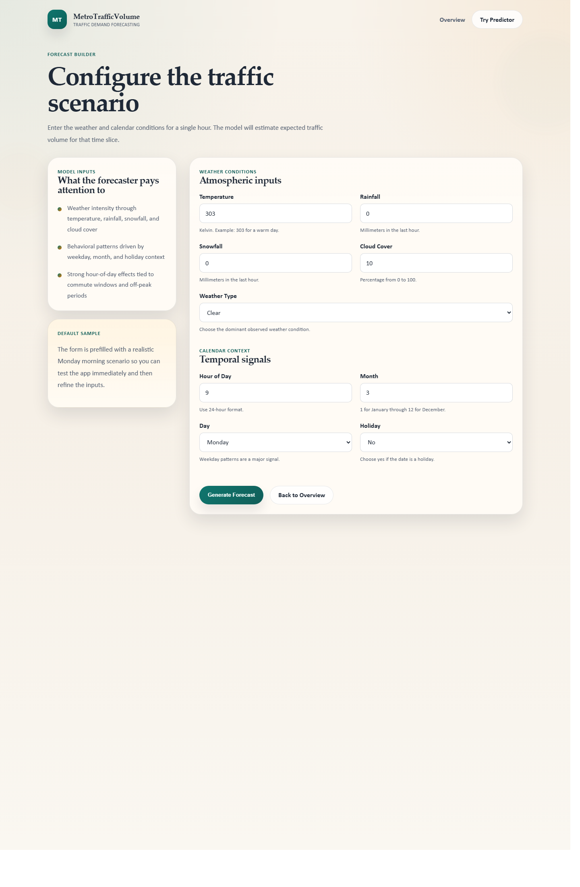
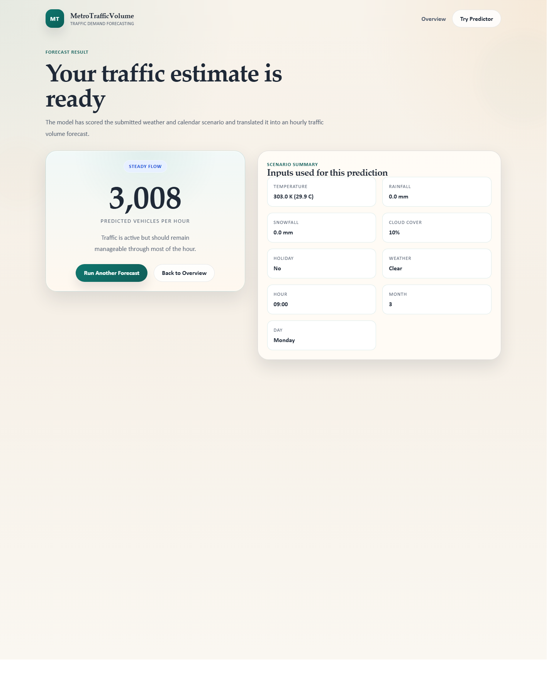

Operational ML Demo
Dataset
48k+
hourly observations
Best baseline
R2 0.95
random forest model
Inference path
~23 ms
preprocess + predict
Forecast hourly traffic volume before congestion becomes visible.
MetroTrafficVolume turns weather and calendar inputs into a traffic demand forecast that can support roadway planning, control-room decision making, and staffing scenarios.
Designed like a deployable forecasting workflow, not just a notebook.
The project packages ingestion, preprocessing, training, and inference into reusable modules, then exposes the final model through a Flask interface for interactive use.
- Hourly weather inputs including rain, snow, temperature, and cloud cover
- Calendar context such as day-of-week, month, holiday status, and hour of day
- A model-selection workflow comparing multiple regressors before serving
Workflow
How the system moves from raw data to a traffic forecast
Ingest and clean
Read the metro traffic dataset, filter anomalies, and derive time-based features from timestamps.
Transform features
Apply a mixed preprocessing pipeline for numerical scaling and categorical encoding.
Train and compare
Benchmark multiple regressors and persist the strongest model with the preprocessor.
Serve forecasts
Collect user inputs through the web app, run inference, and return an interpretable volume estimate.
Screenshots
Flask app preview


